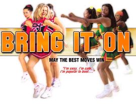
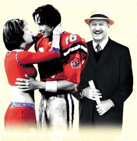

|
Good evening. I´m Steven Harrison and tonight I´m presenting the first in a series of reviews from my visits at the movies called, oddly enough At The Movies. Tonight's first review is really a sweet little story. It is called ‘Bring It On’.
|
|
Bring It On (2000)
 I really thought I would not like this movie. I really didn't. Having not been through an American high-school, I really don't understand what the whole 'cheerleading' thing is all about. That's why I went to this movie, not expecting to get a great deal out of it.
I was, however, pleasently surprised. The story revolves around the newly-appointed captain of the Toro's cheerleading squad, Torrance Shipman (Dunst), whose team has been the national cheer champions for the past five years, and looks to be heading to their sixth with a fast and frantic cheer routine.
When newcomer Missy Pantone (Dushku) joins the squad, she reveals to the team that their routine is a carbon copy of one performed by the cheer squad at the inner-city high school at East Compton (the East Compton Clovers).
While the Toro's are forced to come up with a new routine, the Clovers face financial struggles trying to get to Florida for the national championships, where both teams face off against each other.
While being mildly amusing, the film is a little predictable (guess who wins the championships), but is an interesting insight into the world of American high school cheerleaders.
Funniest moment: The opening dream sequence (but still predictable)
Rating: 5/10
"Bring it On" stars Kirsten Dunst, Eliza Dushku, Jesse Bradford, and Gabrielle Union, and is rated PG-13 (USA), 12 (UK). It is currently showing in US theatres, and opens in England on October 20th, 2000.
|
|
The Replacements (2000)
Another predictable, yet funny film, this movie is based around a strike by the Washington Sentinels American Football team, and the owner is forced to hire replacement players.
Jimmy McGinty (Hackman) is the coach that hires a rag-tag team including a SWAT team member, a bar owner, two pop star body guards, a prisoner, a sumo wrestler, and a former college quarterback who now scrapes barnacles from the hulls of boats for a living (Reeves).
It also seems the cheerleaders are on strike as well, as the only remaining cheerleader (Annabelle Farrell, played by Brooke Langton) has to recruit a new team, who seem to all come from the local strip joint.
Although initially failing as a team, they all slowly bond together, and by the their last game everything comes good as they manage to beat one of the hardest teams in the league just as the player's strike comes to a close and the replacements have to go back to their day jobs.
You don't have to be a fan of American football to watch this movie, as there's not a great deal of football in it. There should be enough in there to satisfy NFL fans though, and even John Madden appears as one of the commentators.
Funniest moment: Either the scene where all the replacment players are in jail, or the second car park scene.
Rating: 5/10
"The Replacements" stars Keanu Reeves and Gene Hackman, and is rated PG-13 (USA). It is currently playing in theatres across the US, and opens in Europe in October and November 2000.
|
|
Well, they were a pathetic couple. Still, at least nobody's noticed where I've stolen this intro from. Crime does not pay, except on the web. In any case, there´s nothing more I wish to add, so good night until next month, when hopefully my reviews will not be hopelessly out of date, Mr Editor? (Ahem. Ed) Good night.
|
|
Back to Contents
|
|